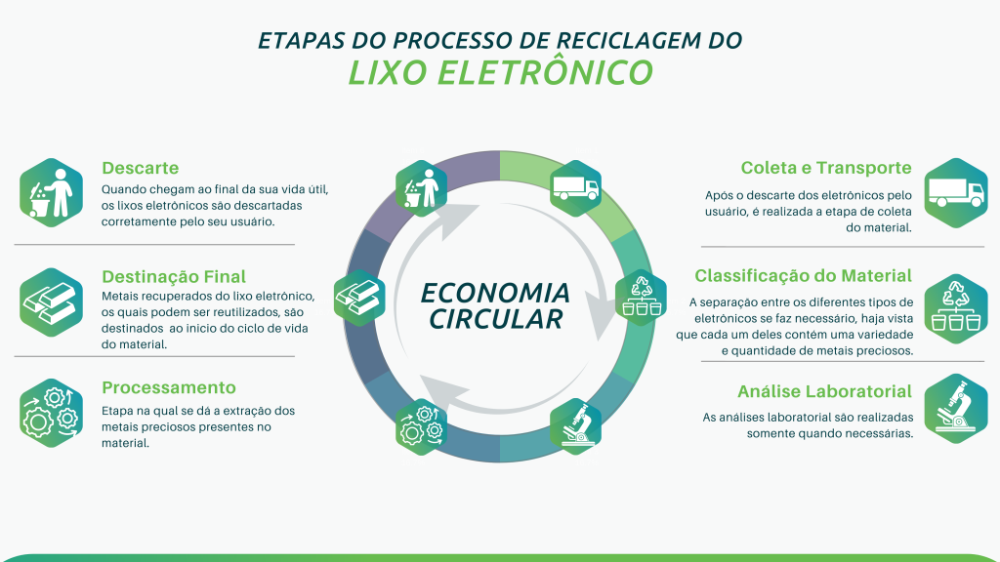

Como funciona a reciclagem de produtos eletrônicos?

No Brasil, existem locais corretos para se realizar o descarte de resíduos de equipamentos eletroeletrônicos. Os comerciantes e distribuidores são responsáveis por receber estes equipamentos e entregar aos fabricantes e importadores. Por fim, eles são responsáveis por assegurar a destinação final ambientalmente adequada a estes equipamentos, como a reciclagem.
Triagem e separação dos componentes:
Após a coleta, o processo de reciclagem de equipamentos eletrônicos se inicia por meio de uma triagem, que pode ser feita manualmente ou por um computador. Há a separação dos equipamentos em condições de uso (que podem ser doados) dos que não podem ser reutilizados. Logo, os aparelhos são desmontados, e a carcaça, a bateria, o vidro e as placas de circuito são separados, sendo dado um destino diferente para cada componente.
Processamento e venda:
A carcaça é triturada e separada por cada material de acordo com a sua densidade. Depois disso, os resíduos podem ser vendidos para outras empresas que utilizam os polímeros presentes nesses objetos, bem como incinerados para gerar energia. Esse método, no entanto, ainda suscita discussões devido às substâncias que podem ser liberadas a partir dessa queima, como a dioxina. Eles ainda podem ser derretidos e transformados em outro plástico. Este material reciclado apresenta, segundo algumas pesquisas, desempenho satisfatório em testes de resistência mecânica. Os materiais tóxicos são colocados em tanques preparados para armazenar esse resíduo eletrônico e são destinados a empresas especializadas. Os vidros dos equipamentos possuem diferentes componentes. Eles podem ser separados por tipo ou misturados e passam por um processo de moagem e tratamento, sendo vendidos para empresas que os utilizam como matéria-prima. Já as baterias são separadas e destinadas a empresas específicas, que farão o descarte correto ou a reciclagem. No Brasil ainda não existe processo de reciclagem para a placa de circuito impresso (PCI). Ela é encaminhada para países que possuem tecnologia suficiente para realizar esse tipo de reciclagem, como os Estados Unidos e a Suíça.